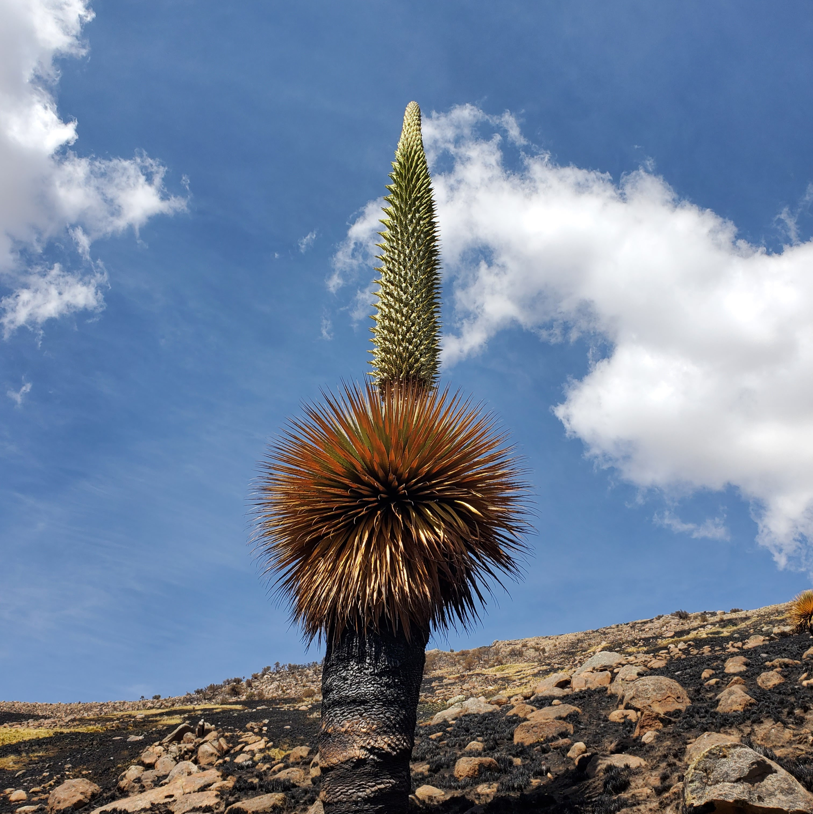
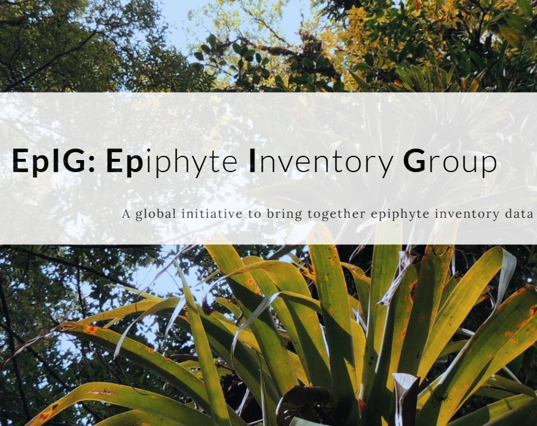
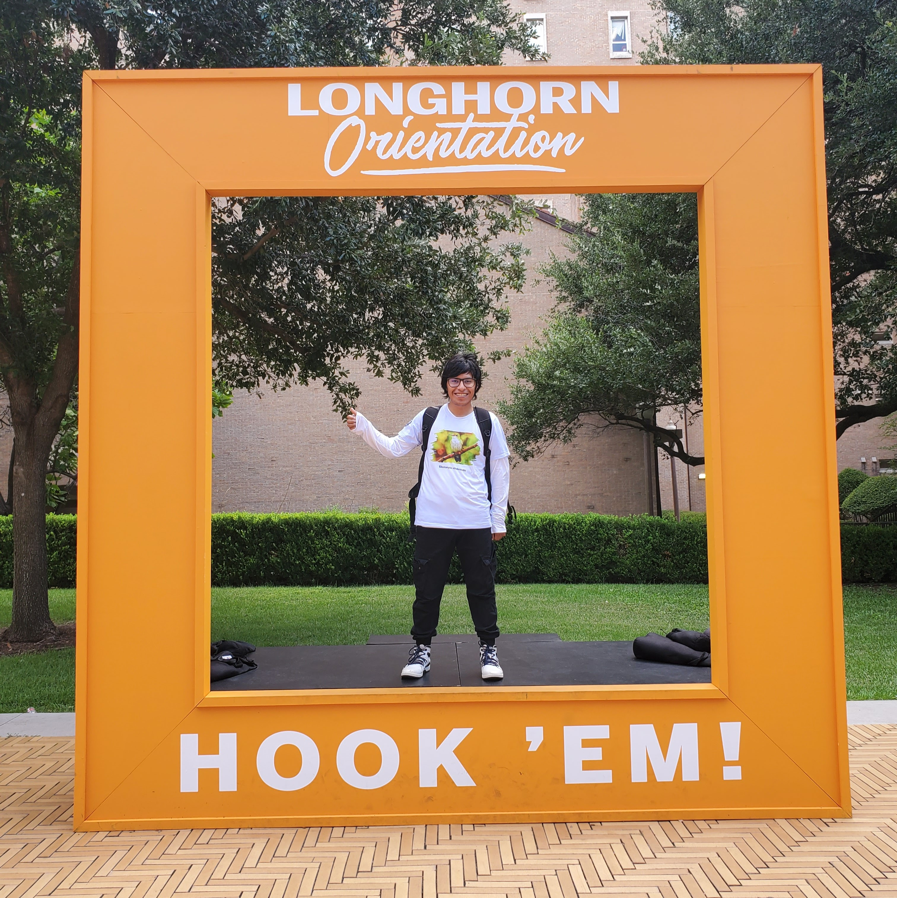
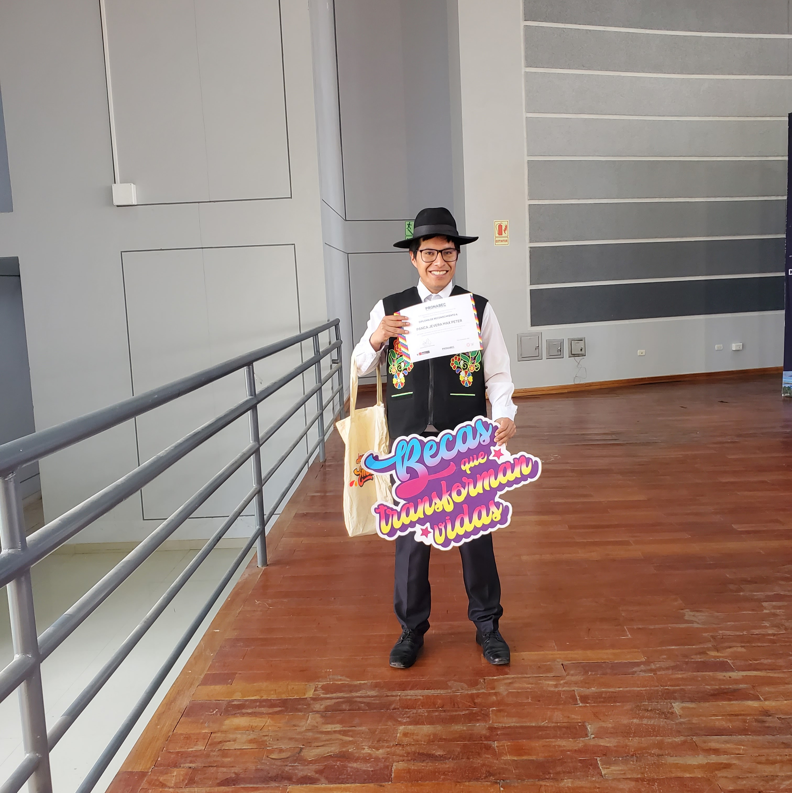
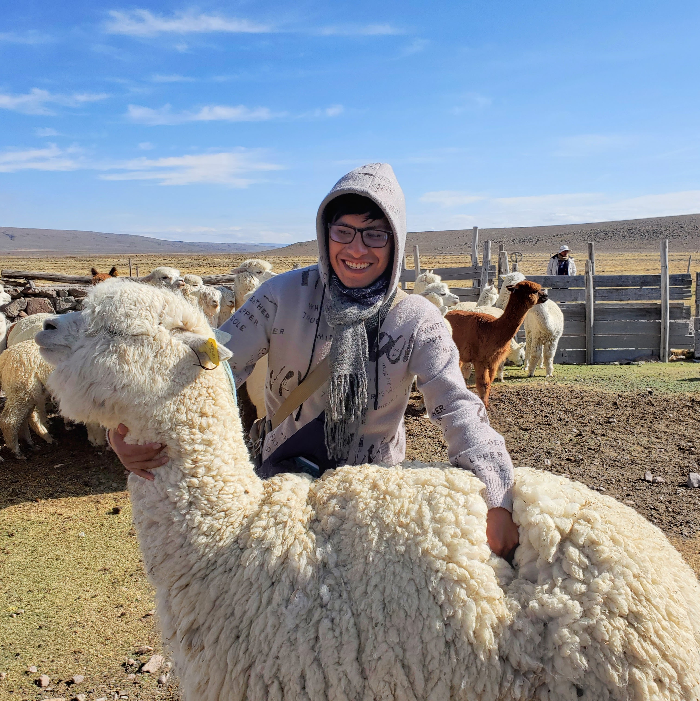
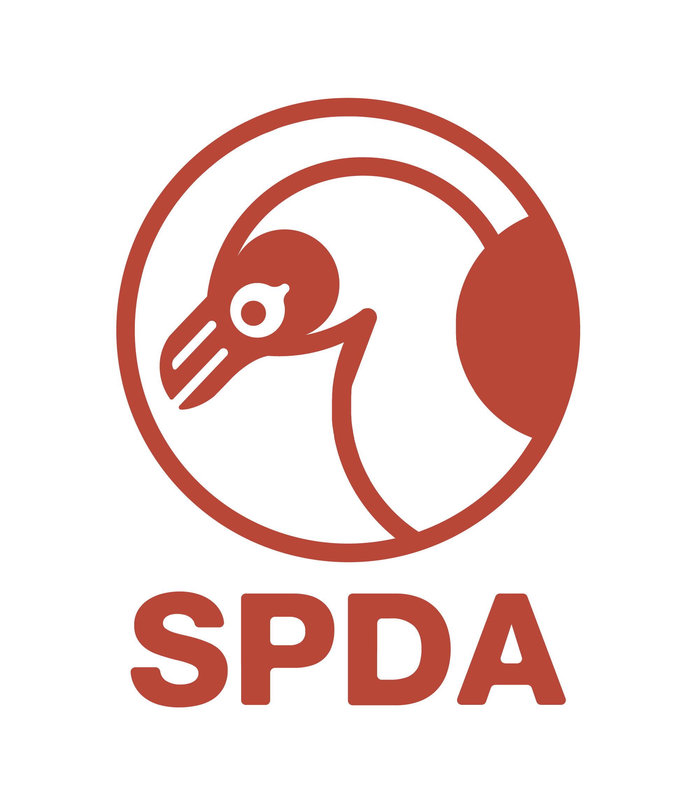

{kind=link}

Ecología de Fuego
Estudio de impactos de incendios sobre biodiversidad y suelos en la Puna.

Biologist | Ecology Researcher
Mi trayectoria comenzó en la Universidad Nacional del Altiplano (Puno), donde mi fascinación por los ecosistemas de alta montaña me llevó a especializarme en ecología. Como beneficiario de la Beca Permanencia de PRONABEC, logré consolidar una base académica sólida que pronto se transformó en una búsqueda activa por entender los disturbios ambientales en la Puna.
Mis primeros pasos formales en investigación fueron en el Gutierrez-Flores Lab, donde participé como investigador y tesista en proyectos de ecología empírica, tocando temas como interacciones entre plantas y ecología del fuego en un proyecto financiado por PROCIENCIA/CONCYTEC. Estas experiencias no solo me permitieron publicar mis primeros artículos científicos, sino que también despertaron mi interés por la ecoinformática y el manejo de datos complejos.
Gracias al programa EcoREPU, expandí mis horizontes hacia los Estados Unidos, realizando una pasantía en el Wolf Lab de la Universidad de Texas en Austin. Allí, me sumergí en el estudio de las interacciones planta-suelo y el funcionamiento ecosistémico. Esta visión internacional se fortaleció aún más con mi participación en la diplomatura de DESCOSUR y mi selección en el taller de derecho ambiental de la SPDA.
Actualmente, aplico mi experiencia en el análisis de datos y rasgos funcionales como asistente de investigación en el proyecto CONTINENT de la Universidad de Marburg (Alemania). Cada paso que he dado ha sido impulsado por el deseo de conservar la biodiversidad neotropical y contribuir con ciencia de alto nivel a la resolución de problemas ambientales globales.

Estudio de impactos de incendios sobre biodiversidad y suelos en la Puna.

Relación de rasgos funcionales entre epífitas y hospederos (CONTINENT Project, R programming).

Pasantía EcoREPU en el Wolf Lab, University of Texas at Austin (USA, 2025).

Bachiller en Biología (Ecología). Beneficiario de la Beca Permanencia de PRONABEC.

Diplomatura en Gestión de Ecosistemas de Alta Montaña (DESCOSUR & UNALM, 2023).

Seleccionado para el 23° Taller de Derecho Ambiental de la SPDA (2024).
{kind=link}
{kind=link}
{kind=link}
{kind=link}
{kind=link}